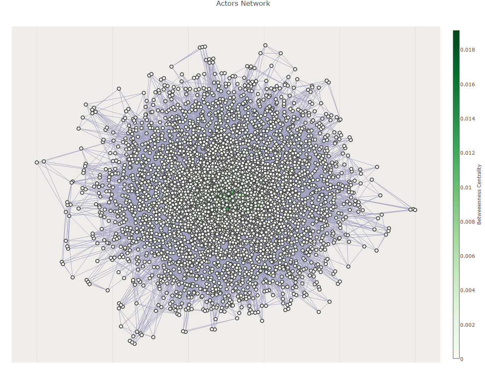

This website contains the analysis of 4376 English language movies from the years 1986 to 2016. The data was downloaded through IMDb and additional information was acquired using Wikipedia’s APIs. The dataset contains 28 columns of information such as the movie’s director, top 6 billed actors, budget, gross, genre, rating and etc. Additionally to the IMDb dataset, 641 movie scripts were downloaded from www.imsdb.com. The movie scripts were stored individually in text files.
Notebooks for each section are linked in the beginning of each section and in the
Source section.
Use the top nav bar to quickly jump between different sections.
Please see the dataset here.
A picture is worth a thousand words, so here is an introduction to our project:
We have downloaded whole IMDb database from http://www.imdb.com/interfaces and generated a smaller subset based on our requirements:
Our files of interest are of total size of ~6.7GB and are in plain text format.
Since many of the movies didn't have fields like plot or budget specified we used Wikipedia API in order to fill in the missing info.
For the above mentioned Top 10K list we did some screen scraping and parsed the result into a single file. The list has been taken from
IMDb Most Popular Females/Males based on STARmeter as was for week 45 in 2016.
Some of the basic stats are:
Below you will find more detailed statistics of our dataset. You can always look at our dataset
here. All the source code used for generating our dataset can be found
under Source section.
The most profitable actor (money what their movie earned (gross)): Tom Hanks 7.2 billion Helena Bonham Carter 7.0 billion Tom Felton 7.0 billion Gary Oldman 6.9 billion Daniel Radcliffe 6.9 billion Samuel L. Jackson 6.7 billion Alan Tudyk 6.5 billion Tom Cruise 6.4 billion Cate Blanchett 6.3 billion Alan Rickman 5.8 billion The most profitable actor ratio-wise (money what their movie earned (gross)): Samuel L. Jackson 284.066 Bruce Willis 281.3562 Tom Cruise 216.7139 Allison Janney 210.9155 Cameron Diaz 207.7632 Ben Affleck 190.6686 Tom Hanks 188.9037 Lin Shaye 182.6518 Matt Damon 181.686 Shawnee Smith 180.5823 The worst profitable actor (money what their movie earned (gross)): Omar Sharif -199.4 million Sean Pertwee -191.0 million Linda Fiorentino -158.1 million Diane Venora -151.8 million Vladimir Kulich -142.0 million Rachael Leigh Cook -136.6 million Tom Everett Scott -135.4 million Elisabeth Harnois -128.7 million Raymond Ochoa -128.7 million Jenna Elfman -127.5 million The worst profitable actor ratio-wise (money what their movie earned (gross)): Aisling Loftus 9.1e-05 Sharon Horgan 9.1e-05 Melanie Scrofano 0.000125 Tony Jaa 0.000138 Luke Kirby 0.000145 Rob Benedict 0.000149 Ambyr Childers 0.000158 Toby Hemingway 0.000158 Samuel Roukin 0.000217 Dylan Moran 0.000217
The most profitable actors in terms of gross was very well knwon famous characters like Tom Hanks Helena Bonham Carte or Tom Felton. All of them bring profit of 7 and more billion $. It is interesting though that they didn't raise the money of the movie many times. Anyone of them is in first 10 most profitable actors ratio- wise. It may come to conclusion that Samuel L. Jackson Bruce Willis and Tom Cruise who were on top three positions in most profitable ratio-wise ranking of actors are better actors who by their performance can increase the profit from the movie more. In terms of worst profitable actors there is no surprise. none of the well known actor is there (unfortunately) cause it would make a big disruption in hollywood world.
For this project the key was to analyze the network of actors and directors. To do that we created two networks one consisted only of actors connected between each other based on the movies in which they were playing togeter as well as directors network where each of the node represented by the director were conected by edge (actor) with whom director was working with.

Number of nodes: 4663
Number of links: 62192
Most frequent pairs of actors
Adam Sandler and Rob Schneider {'weight': 13}
Daniel Radcliffe and Tom Felton {'weight': 8}
Jim Cummings and Frank Welker {'weight': 8}
Kevin James and Adam Sandler {'weight': 8}
Adam Sandler and Steve Buscemi {'weight': 8}
John Cusack and Joan Cusack {'weight': 7}
Quentin Tarantino and Samuel L. Jackson {'weight': 6}
Johnny Depp and Helena Bonham Carter {'weight': 6}
George Clooney and Matt Damon {'weight': 6}
Matt Damon and Ben Affleck {'weight': 6}
Nicole Kidman and Tom Cruise {'weight': 6}
James Franco and Seth Rogen {'weight': 6}
Jonah Hill and Seth Rogen {'weight': 5}
Kevin Smith and Ben Affleck {'weight': 5}
Kevin Smith and Ethan Suplee {'weight': 5}
Bill Nighy and Martin Freeman {'weight': 5}
Daniel Radcliffe and Alan Rickman {'weight': 5}
Samuel L. Jackson and Bruce Willis {'weight': 5}
George Clooney and Brad Pitt {'weight': 5}
Dolph Lundgren and Sylvester Stallone {'weight': 5}
Danny Trejo and Steve Buscemi {'weight': 5}
Matt Damon and Casey Affleck {'weight': 5}
Matt Damon and Brad Pitt {'weight': 5}
Paul Rudd and Seth Rogen {'weight': 5}
Pamela Adlon and Mae Whitman {'weight': 5}
Morgan Freeman and Ashley Judd {'weight': 5}
Tom Felton and Alan Rickman {'weight': 5}
Owen Wilson and Ben Stiller {'weight': 5}
Hugh Jackman and Famke Janssen {'weight': 5}
Danny Glover and Mel Gibson {'weight': 5}
As we may observe the network of actors is consisted of 4663 nodes representing actors. They are connected between each other 62192 times. Interesting for us was to present who was playing the most frequent with whom. We may see that amount of actors who were playing together in many movies is very big wich means that the network is very dense. Recrod is Adam Sandler and Rob Schneider who were playing together 13 times. It is showing that they are good friends and this fact is also confirmed by the information which you may find on your own. Sandler is playing in almost every Schneider movie (Schneider is often porducer and actor in the same time).
Daniel Radcliffe and Tom Felton are also often together. This is mainly because of the Harry Potter movies in which they were playing. 8 movies 8 times they were together.
Samuel L. Jackson with value of 0.0190923378663
Bruce Willis with value of 0.0146317181357
Frank Welker with value of 0.0139737821041
Nicolas Cage with value of 0.0119755155006
Robert De Niro with value of 0.0115052284022
Robin Williams with value of 0.0111381386484
Morgan Freeman with value of 0.0100377194805
Liam Neeson with value of 0.00935405825492
John Goodman with value of 0.00884639332967
Christopher Walken with value of 0.00880429873827
In terms of betweenes centrality measurement the most central Actor is Samuel L. Jackson, second one is Bruce Willis and the 3rd one Frnak Welker. They all are quite significantly more central than the others. It is consecutively 8%, 3% and 2% from the 4th Nicolas Cage. It may be interesting to see what is the influence of it on relations between actors. But form where take this data to have opportunity to correlate? Maybe Twitter but it is another project.
Samuel L. Jackson with value of 0.122408785363
Bruce Willis with value of 0.116849841518
Matt Damon with value of 0.104437895613
Robert De Niro with value of 0.101148460876
Morgan Freeman with value of 0.0980208625364
John Cusack with value of 0.0910546823135
Steve Buscemi with value of 0.0887923547864
Robin Williams with value of 0.0877423310874
Brad Pitt with value of 0.0841875498816
J.K. Simmons with value of 0.0827427545435
The most central actors are Samuel L Jackson, Bruce willis and Matt Damon. It is almostthe same what betwennes centrality shown with the difference that Matt Damon has more influence on the network when we calculate eigenvector centrality. It means that he was playing with more actors with higher importance (more nodes) than Frank Walker who was 3rd in terms of betweenes centrality. It may be caused by the fact that Matt Damon was playing mainly in super production together with famous well known actors which had more influence on the network.
Majority of the actors is only 3 handshakes from each other. That is ilustrating the most how dense the structure of actors netwrk is. The longest route is 6 which is still less than global average - 7. It means that the Holywood is very dense and everybody knows each other.
We group actors into the genre they appear most in to try to detect if the genres are good communities.
List of how many actors each genre has: Mystery: 23 Romance: 2 Sci-Fi: 3 Family: 3 Horror: 193 Thriller: 4 Crime: 151 Drama: 970 Fantasy: 9 Animation: 20 Music: 1 Adventure: 183 Action: 1345 Comedy: 1628 Documentary: 24 War: 2 Biography: 102 ------------------------------- Mystery modularity is 0.000208995908167 Drama modularity is 0.0549944970595 Sci-Fi modularity is -5.81719298243e-10 Family modularity is 1.6078656768e-05 Horror modularity is 0.00379229267609 Crime modularity is 0.00207274801133 Romance modularity is -2.5854191033e-10 Fantasy modularity is 3.21532415008e-05 Animation modularity is 0.000176845769169 Music modularity is -6.46354775826e-11 Adventure modularity is 0.00419451666767 Action modularity is 0.14438718909 Comedy modularity is 0.222783412029 Documentary modularity is 0.000418022970634 War modularity is 1.60789799454e-05 Thriller modularity is -1.03416764132e-09 Biography modularity is 0.000964081841727 Modularity of the Actor's Network is 0.434056910962 ------------------------------- Modularity of the Actor's Network is 0.281269844569 according to the Louvain algorithm
Conclusion: Network of actors is very dense and there is a lot of communities but they are small compare to the network size so it is difficult to detect them. Our network had quite big modularity when we divide it according to the genres of the movies but ist is not the best classification comparing ot hte Louvain algorithm. We got modularity almost twice bigger than Louvain algorithm. It is also showing that our network is very complex and there is not simple one feature which differentiate dataset to the communities.
Analysis of another network consisted of Directors directly connected to the actors to check which director has the biggest community of actors.
Number of nodes: 6448 Number of links: 24539 20 Directors with the greatest actors network: Woody Allen with value of 146 Steven Spielberg with value of 109 Clint Eastwood with value of 105 Ridley Scott with value of 99 Ron (I) Howard with value of 95 Oliver (I) Stone with value of 84 Steven Soderbergh with value of 81 Barry (I) Levinson with value of 81 Renny Harlin with value of 78 Joel Schumacher with value of 77 Rob Reiner with value of 76 Spike Lee with value of 74 Tony (I) Scott with value of 69 Chris Columbus with value of 66 Stephen Herek with value of 66 Garry (I) Marshall with value of 65 Robert Zemeckis with value of 64 Tim (I) Burton with value of 64 Martin (I) Scorsese with value of 63 Ivan Reitman with value of 62
Number of nodes in this network represents both directors as well as actors. The highest community of actors have Woody Allen but he directed the most - 31 movies. Second one is Steven Spielberg who directed 19 movies similiar to Clint Eastwood who was third in our statistics. It is obvious that the number of movies which he directed but some of the directors prefer to work always with the same actors or create movies in series which has to have the same actors in different episodes.
Next network consist of directors as a nodes with edges between them representing actors.
Number of links: 121251 Number of nodes: 1921
Woody Allen with value of 0.0187819014826 Ridley Scott with value of 0.0151728436898 Steven Spielberg with value of 0.0125917903898 Clint Eastwood with value of 0.0111515532796 Ron (I) Howard with value of 0.0105641215123 Oliver (I) Stone with value of 0.010556704873 Tony (I) Scott with value of 0.00922967454605 Barry (I) Levinson with value of 0.00885625115466 Walter (I) Hill with value of 0.00864140195794 Joel Schumacher with value of 0.00863278629818
The results of betweenes centrality measurement definitely makes sense based on the finding above. Woody Allen has the highest betweenes centrality becasue of the fact that his network of actors is the biggest. He is the most central Director. THe same is with the other Directors who are in the top 10 of most central directors. They are all directors who produced a lot of movies. But based on that we can say that our data are a bit different and Ridley Scott who is not the second director in terms of amount of actors in the network is the second most central director. It means that the actors who he was working with are more central which means that they have potentially stronger network and are more known in this Hollywood world.
Woody Allen with value of 0.0950294577375 Steven Spielberg with value of 0.0912651602567 Barry (I) Levinson with value of 0.0894931214361 Oliver (I) Stone with value of 0.0880117134816 Ron (I) Howard with value of 0.0870836666393 Ridley Scott with value of 0.0865413671453 Tony (I) Scott with value of 0.0833347931727 Clint Eastwood with value of 0.0819358447652 Joel Schumacher with value of 0.0816934582326 Martin (I) Scorsese with value of 0.0814357425669 Steven Soderbergh with value of 0.0787542127529 Michael (I) Bay with value of 0.0775885608277 Ethan Coen with value of 0.0765195862013 Spike Lee with value of 0.0734792483432 Robert Zemeckis with value of 0.0733179997185 Mike (I) Nichols with value of 0.0731948556936 Tim (I) Burton with value of 0.0714182947515 Ivan Reitman with value of 0.0710576774678 Rob Reiner with value of 0.070045195902 Walter (I) Hill with value of 0.06871236156
The measure of eigenvector centrality seems to show us that still Woody Allen is the most important director in hollywood and his persona has the most influence on the whole network. The second one is Steven Spielberg as well as Barry Levinson who is third in terms of eigenvector centrality. Ridley Scott is 6th. Key finding is also that the differences between eigenvector centralities between 1st and 20th director are minimal around 2.5% which is not a lot in terms of such a dense network.
Note: All scripts has been scrapped from www.imsdb.com. Please refer to Source section to see the code.
To see how positive or negative a movie script is, the LabMT wordlist was downloaded. It's available as supplementary material from Temporal Patterns of Happiness and Information in a Global Social Network: Hedonometrics and Twitter (Data Set S1). Link
The list was generated by collecting tweets over a three year period running from September 9, 2008 to September 18, 2011. To the nearest million, the data set comprises 46.076 billion words contained in 4.586 billion tweets posted by over 63 million individual users.
For the evaluations, users on Mechanical Turk were asked to rate how a given word made them feel on a nine point integer scale, obtaining 50 independent evaluations per word.
The data set consists of 10,222 words and their average happiness evaluations according to users on Mechanical Turk.
Top-10 negative movie scripts based on sentiment analysis Army of Darkness (1992): 5.31525757576 Platoon (1986): 5.32206329951 The Crow (1994): 5.32211348684 Basic (2003): 5.33211344336 Day of the Dead (2008) (V): 5.33463873626 Saw (2004): 5.33751343932 Tremors (1990): 5.3418790443 Judge Dredd (1995): 5.34603737338 Soldier (1998/I): 5.34659166583 Blade II (2002): 5.34694065162 Top-10 positive movie scripts based on sentiment analysis Midnight in Paris (2011): 5.80318045862 Bridesmaids (2011/I): 5.75815061203 The Perks of Being a Wallflower (2012): 5.75303769046 Clueless (1995): 5.74288487832 Sex and the City (2008): 5.74161941964 The Bling Ring (2013): 5.73512627291 Saving Mr. Banks (2013): 5.73458253003 The Family Man (2000): 5.73050610628 Music of the Heart (1999): 5.72940391224 Peggy Sue Got Married (1986): 5.72683992259 Top-10 negative directors based on sentiment analysis Alex Proyas: 5.38538545141 John McTiernan: 5.39949320603 Renny Harlin: 5.40513683052 Guillermo del Toro: 5.40923648367 Paul W.S. Anderson: 5.42033460888 Michael (I) Bay: 5.44635840041 Sam Raimi: 5.44659580176 Paul (I) Verhoeven: 5.45136034171 Ron (I) Howard: 5.45377046276 Guy Ritchie: 5.4562533964 Top-10 positive directors based on sentiment analysis Cameron (I) Crowe: 5.70082266725 Woody Allen: 5.68673391417 James L. Brooks: 5.65280563364 Bennett (I) Miller: 5.63250851221 Paul Thomas (I) Anderson: 5.60362698178 Jonathan Demme: 5.59856968488 Henry Selick: 5.59515200213 Robert Zemeckis: 5.5728983279 Anthony Minghella: 5.56647112957 Brett Ratner: 5.56450542717 Top-10 negative actors based on sentiment analysis Forest Whitaker: 5.38696512673 David Morse: 5.3943744673 Tom Savini: 5.40530097627 John Leguizamo: 5.42322665994 Taye Diggs: 5.42650666406 Ron Perlman: 5.42739500389 Ben Foster: 5.42829341784 Ewen Bremner: 5.42908744838 Courteney Cox: 5.43081948785 Jason Isaacs: 5.4314803348 Top-10 positive actors based on sentiment analysis Garry Marshall: 5.68252372542 Anthony Michael Hall: 5.68216562581 Joan Cusack: 5.67676420784 Michael Sheen: 5.67045527413 Paul Rudd: 5.66780866284 Olivia Thirlby: 5.66609008895 Jim Cummings: 5.66587103372 Bradley Whitford: 5.66212769672 Zach Galifianakis: 5.65795444584 Alan Arkin: 5.65774269792 Sentiment scores for genres from negative to positive Action: 5.45712343571 Horror: 5.46539287319 Mystery: 5.49761827646 Crime: 5.50364935555 Adventure: 5.5497598934 Drama: 5.56692807715 Biography: 5.58419956585 Comedy: 5.59980973298
The best representation of a genre is clearly the crime genre, which is a lot more specific than other genres which are displayed here. Words like gun, cell, vault, guard, casino, shotgun and profanities (fuck) are common in the image, which really reflects the themes of crime movies.
The image for the action genre includes many words related to weapons, with the word sword the most obvious one. Words related to transport and creatures (dragon, alien and vampire) are also common. All in all, a fairly good representation of the action genre.
The comedy genre has the problem of being a very broad genre, many movies can fall into that category. The word nun is somehow very popular within the movies in the dataset that make up the comedy genre and profanites have a strong presence as well.
The same thing can be described of the drama genre. Movies that are consider drama can have many different themes and subjects, so words related to transport stand out.
Other genres have considerable less words to play with and that is reflected in their wordclouds, movies within the genres have much more weight in the images.
To start with it is good to underline that creation of large dataset with very detailed information was a big success. Merging a lot of different sources like IMDb, Wikipedia, IMSDb using APIs or scraping the information went very well. It was a great success to clean messy data sets of different parameters into one file which could be further analyzed and used in study.
Another thing which went well was analysis of the network. The fact that we asked a lot of specific questions connected with profit and the movie business, on which we could find the answers during the analysis of the dataset. Process of analysing actors and directors separately to cope with conclusions about movies was performed well.
Network part and the key findings like which actors are playing in the most movies together, the most central actors and directors gave a lot of information about the network on its own. After the analysis we found that the most famous actors and directors are the most central people in the whole network. The outliers in our networks, where unknown actors and directors.
The process of sentiment analysis of the movie scripts gave us interesting information about which actors are more starring in positive or negative movies. Furthermore, the sentiment of a movie is correlated with the genre of the movie. Our findings seems to follow the assumptions that comedy films tend to have higher sentiment score (be more positive) than action and drama films.
It should be noted that we only had 641 movie scripts to work with, which is drastically fewer movies than in the total dataset (4376 titles). Therefore, the text analysis could be improved if more movie scripts are acquired. Nevertheless, we got some interesting data from it and our findings supported our theory that movies tend to have more positive or negative words based on its genre.
Future work would be to use English subtitles for the movies instead of the movie scripts. Almost every English language movie has subtitles and there are large databases for subtitles on the internet. The difference is that movie scripts also include descriptions of scenes, while subtitles only have the dialogue. It could be interesting analysis and would probably help with the word clouds for different genre to have more words to play with.
All notebooks in order they appeared on the web site:
(please allow some time to load as notebooks are pretty big)
Dataset Notebook - Motivation, Basic Stats and Analysis Part 1
Directors Notebook - Basic Stats and Analysis Part 2
Actors Notebook - Basic Stats and Analysis Part 3
Networks Notebook - Theory and Analysis Part 1
Scripts Notebook - Theory and Analysis Part 2
Dataset generation:
Main dataset generator
Utility to manage files
Scraping top actrors from IMDb
Parsing top actors from IMDb
Getting budgets from wiki
Filling missing budgets from wiki
Getting plots from wiki
Filling missing plots from wiki
imsdb.com Scripts scraping:
Main script
Utlity
Scraping part
HTML tags stripper
Parsing part
{kind=link}
{kind=link}
{kind=link}
{kind=link}
{kind=link}
{kind=link}
{kind=link}
{kind=link}